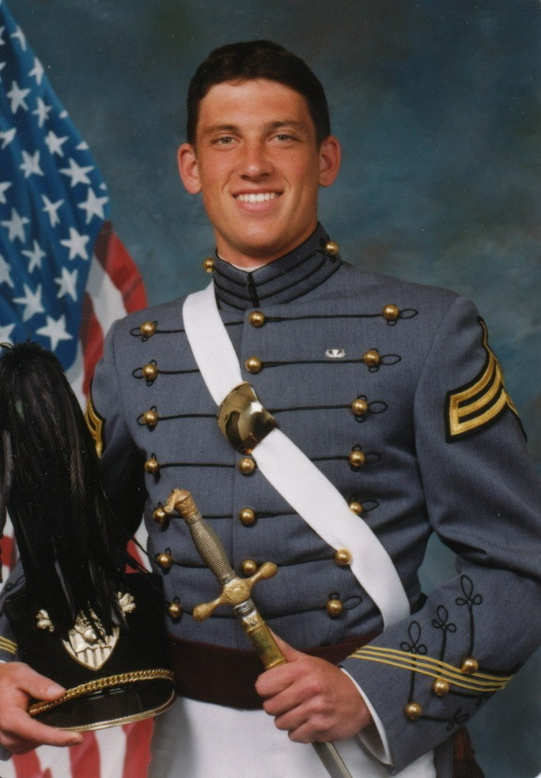

A

Owner · Doctor of Veterinary Medicine
Dr. Andy Burdette
Hometown son, West Point graduate, and Army combat veteran. He came home to Jackson in 2018 and bought his father's practice in 2023 — redirecting a life of service into caring for the town's pets.
West Point
U.S. Army Officer
Jackson, born & raised